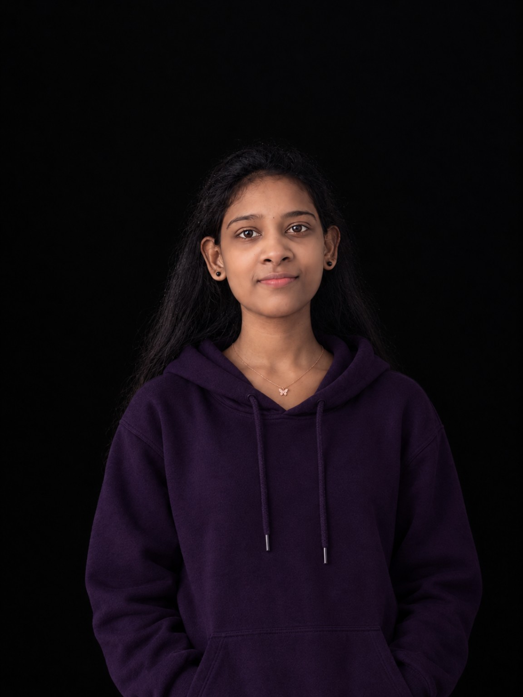

AVAILABLE FOR COLLABORATION PORTFOLIO / 2026
Hi, it’s
Femi.
A curious mind. A creative builder.
ME CSE Student · Software · AI & Fintech
I’m Angelin Femi, a computer science engineer who loves exploring ideas and turning them into meaningful digital experiences. From software quality and project coordination to AI-driven concepts, I enjoy building things that are thoughtful, useful, and human-centred.
01 / ENGINEERING02 / RESEARCH03 / PROJECT EXECUTION
TECH + PEOPLE
CURIOUS BY DESIGN

FinSurgeQA → PMO
GeoPlixAI + geospatial research
M.E. CSE2026 — 2028
Second PrizeCoding contest · 2025
8.36BE CGPA / 10
AI ×REAL-WORLD PROBLEMS
QA + PMOINDUSTRY EXPOSURE
ICICEA2026 RESEARCH PRESENTATION
A LITTLE ABOUT ME
A little more about me ↗Wanna know me?
GOT AN IDEA OR A QUESTION?Have questions?
Let’s connect Have questions?
Let’s connect.
Have a project, collaboration, or opportunity in mind? I’d love to hear what you’re working on.